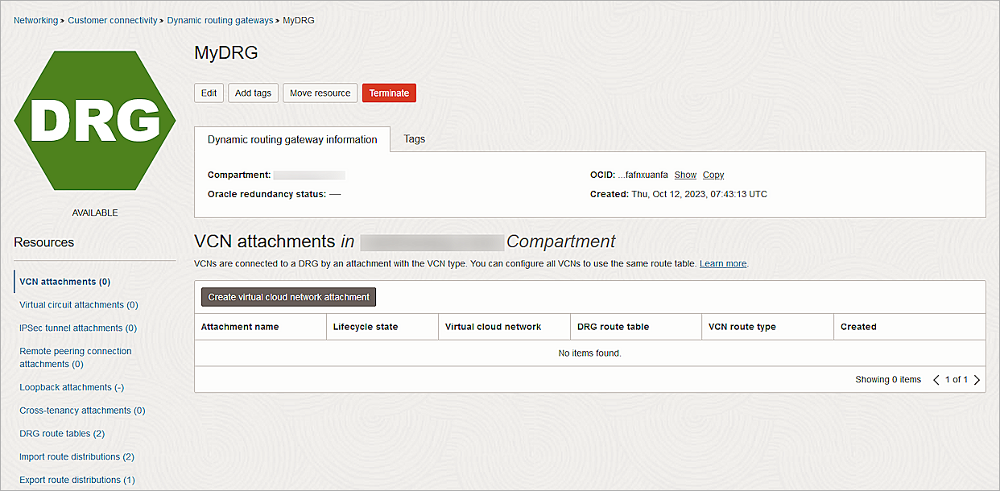

WatchGuard provides integration instructions to help our customers configure WatchGuard products to work with products created by other organizations. If you need more information or technical support about how to configure a third-party product, see the documentation and support resources for that product.
Oracle Bare Metal BOVPN® service is a service offered by Oracle Cloud Infrastructure. This document describes the basic steps to build a Branch Office VPN (BOVPN) tunnel between the Oracle Cloud Infrastructure and a WatchGuard Firebox.
Contents
Platform and Software
The hardware and software used to complete the steps outlined in this document include:
- WatchGuard Firebox with Fireware v12.10
- Oracle Cloud Infrastructure account
Configure Oracle Bare Metal VPN
Oracle documentation lists the basic steps to set up a site-to-site VPN. These steps provide a high-level overview of the process:
- Gather information.
- Create your Virtual Cloud Network (VCN) and a subnet in your VCN.
- Create your Dynamic Routing Gateway (DRG) and Virtual Cloud Network Attachment.
- Update the routing in your VCN to use the DRG.
- Update the security list in your VCN.
- Create a Customer-Premises Equipment (CPE) object and provide the public IP address of your CPE device.
- Create an IPSec connection to the CPE object and provide your static routes.
Create Virtual Cloud Network and Subnet
- Log in to Oracle Cloud as an administrator.
- From the upper-left corner, select the navigation menu.
- Select Networking > Virtual Cloud Networks.
- From the Compartment drop-down list, select your compartment. The available compartment depends on your permission.
- Click Create VCN.
- In the Name text box, type a name.
- In the IPv4 CIDR Blocks text box, type your CIDR block.
- Keep the default values for other settings.
- Click Create VCN.
The Virtual Cloud Network is created.
- Click Create Subnet.
- In the Name text box, type a name.
- In the IPv4 CIDR Block text box, type the CIDR block. Typically, a subnet has a CIDR block smaller than the CIDR of the VCN.
- From the Route Table drop-down list, select the default route table you created earlier.
- For Subnet Access, select Private Subnet.
- From the Security Lists drop-down list, select the default security list you created earlier.
- Keep the default values for other settings.

- Click Create Subnet.
Create the Dynamic Routing Gateway and Virtual Cloud Network Attachment
- From the navigation menu, select Networking > Customer Connectivity > Dynamic Routing Gateway.
- From the Compartment drop-down list, select your compartment.
- Click Create Dynamic Routing Gateway.
- In the Name text box, type a name.

- Click Create Dynamic Routing Gateway.

- From the Resources section, select VCN Attachments.
- Click Create Virtual Cloud Network Attachment.
- In the Attachment Name text box, type a name.
- From the Virtual Cloud Network drop-down list, select the VCN you created.
- Click Create VCN Attachment.
Update the Routing Table
- From the navigation menu, select Networking > Virtual Cloud Networks.
- Select the VCN you created.
- From the Resources section, select Route Tables.
- Select the default route table you created earlier.
- Click Add Route Rules.
- From the Target Type drop-down list, select Dynamic Routing Gateway.
- From the Destination Type drop-down list, select CIDR Block.
- In the Destination CIDR Block text box, type the destination CIDR block.
- Click Add Route Rules.
Update the Security List
- From the navigation menu, select Networking > Virtual Cloud Networks.
- Select the VCN you created.
- From the Resources section, select Security Lists.
- Select the default security list you created earlier.
- From the Resources section, select Ingress Rules.
- Select the rules and click Edit.
- For the ICMP protocol rules, update the Type to All.
- Click Save Changes.
For testing purposes, we allowed inbound ICMP traffic on all ports. Remove this rule after testing.
Create Customer-Premises Equipment (CPE)
- From the navigation menu, select Networking > Customer Connectivity > Customer-Premises Equipment.
- From the Create in Compartment drop-down list, select your compartment.
- Click Create CPE.
The Create CPE page opens. - In the Name text box, type a name.
- In the IP Address text box, type the public IP address of your Firebox.
- In the CPE Vendor Information section, from the Vendor drop-down list, select WatchGuard.
- From the Platform/Version drop-down list, select Firebox with Fireware v12.
- Keep the default values for other settings.
- Click Create CPE.
Create an IPSec Connection
- From the navigation menu, select Networking > Customer Connectivity > Site-to-Site VPN.
- Click Create IPSec Connection.
- In the Name text box, type a descriptive name.
- From the Create in Compartment drop-down list, select your compartment.
- From the Customer-premises Equipment drop-down list, select the CPE object you created earlier.
- From the Dynamic Routing Gateway Compartment drop-down list, select the DRG you created earlier.
- In the Routes to Your On-premises Network text box, type your on-premise network.
- In the Tunnel 1 section, in the Name text box, type a name.
- Check Provide Custom Shared Secret.
- In the Shared Secret text box, type the shared secret key.
- From the IKE Version drop-down list, select IKEv2.
- For Routing Type, select Policy Based Routing.
- In the Associations section, in the On-premises CIDR Blocks text box, type your on-premise CIDR block.
- In the Oracle Cloud CIDR Blocks text box, type your Oracle Cloud CIDR block.
- Click Show Advanced Options.
- Expand Phase One (ISAKMP) Configuration.
- Select Set Custom Configurations.
- From the Custom Encryption Algorithm drop-down list, select AES_256_CBC.
- From the Custom Authentication Algorithm drop-down list, select SHA2_256.
- From the Custom Diffie-Hellman group drop-down list, select GROUP14.
- Expand the Phase Two (IPSec) Configuration section.
- Select the Set Custom Configurations check box.
- From the Custom Encryption Algorithm drop-down list, select AES_256_CBC.
- From the Custom Authentication Algorithm drop-down list, select HMAC_SHA2_256_128.
- Keep the default values for other settings.
- To configure Tunnel 2, repeat steps 8–25.
- Click Create IPSec Connection.
- From the new IPSec connection, copy the IP addresses from the Oracle VPN IP Address column.
Configure the Firebox
To configure the Firebox, complete these high-level steps:
- Configure the Phase 2 IPSec Proposal.
- Configure the Branch Office VPN.
Configure the Phase 2 IPSec Proposal
- Log in to Fireware Web UI at https://<your firebox IP address>:8080.
- Select VPN > Phase 2 Proposals.
- To create a new proposal, click Add .
- In the Name text box, type a name for the proposal.
- (Optional) In the Description text box, type a description.
- From the Type drop-down list, select ESP (Encapsulating Security Payload).
- From the Authentication drop-down list, select SHA2.
- From the Encryption drop-down list, select AES(256-bit).
- For Force Key Expiration, select the Time check box and type 1 hour.
- Click Save.
Configure the Branch Office VPN
- Select VPN > Branch Office VPN.
The Branch Office VPN configuration page opens. - In the Gateways section, click Add.
- In the Gateway Name text box, type a name to identify this Branch Office VPN gateway.
- From the Address Family drop-down list, select IPv4 Addresses.
- In the Credential Method section, select Use Pre-Shared Key.
- In the adjacent text box, type the pre-shared key.
- From the Gateway Endpoint section, select Add.
The Gateway Endpoint Settings dialog box opens. - From the External Interface drop-down list, select External.
- From the Interface IP Address drop-down list, select Primary Interface IPv4 Address.
The Primary Interface IP Address is the primary IP address you configured on the selected external interface. - Select By IP Address.
- In the adjacent text box, type the public IP address of the External Firebox interface.
- Select the Remote Gateway tab.
- Select Static IP Address.
- In the adjacent text box, type the Oracle VPN IP address that you copied from the Oracle Bare Metal IPSec connection.
- Select By IP Address.
- In the adjacent text box, type the Oracle VPN IP address that you copied from the Oracle Bare Metal IPSec connection.
- Click OK.
- Repeat steps 7-17 to create another Gateway Endpoint. In Steps 14 and 16, specify the other Oracle VPN IP address.
- In the Gateway Endpoint section, select the Start Phase 1 tunnel when Firebox starts check box.
- Select the Phase 1 Settings tab.
- From the Version drop-down list, select IKEv2.
- In the Transform Settings section, select the default setting, and click Edit.
- In the SA Life text box, type 8 and select Hours from the drop-down list.
- Keep all other settings as the default values.

- Click OK.
- Click Save.
- From the Tunnels section, select Add.
- From the Gateway drop-down list, select the gateway that you configured.
- From the Addresses section, click Add.
The Tunnel Route Settings dialog box opens.
- In the Local IP section, from the Choose Type drop-down list, select Network IPv4.
- In the Network IP text box, type the local IP segment. This is the local network protected by the Firebox.
- In the Remote IP section, from the Choose Type drop-down list, select Network IPv4.
- In the Network IP text box, type the remote IP segment. This is the local network protected by the Oracle Cloud.
- Click OK.
- Select the Phase 2 Settings tab.
- Select the Enable Perfect Forward Secrecy check box. From the drop-down list, select Diffie-Hellman Group 5.
- In the IPSec Proposals section, from the Phase 2 Proposals drop-down list, select the phase 2 proposal you created, then click Add.
- Remove any other proposals that appear on the list.
- Click Save.
Test the Integration
To test the integration, from Oracle Bare Metal:
- Make sure your IPSec connection status is Up and green.
- Launch an instance into the VCN.
For information about launching an instance, see the Oracle Cloud Infrastructure documentation. - Ping the instance from your on-promises network.
To test the integration, from Fireware Web UI:
- Select System Status > VPN Statistics.
- Select the Branch Office VPN tab.
- Verify that the VPN is established.
- Verify that Host1 (behind the Firebox) and Host2 (behind the Oracle Cloud ) can ping each other.